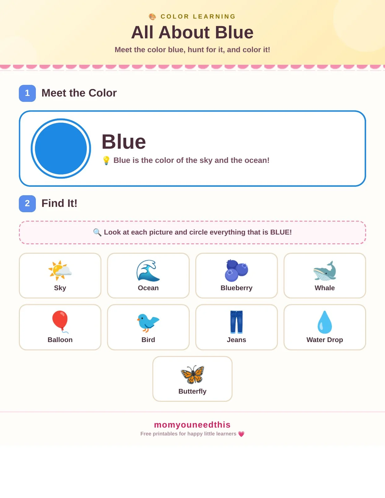

Blue Color Worksheets For Kids Practice Identifying And Naming The Color Blue
Cool as the ocean — these blue worksheets help your child recognize and name the color blue everywhere they look.
Quick Answer
This free printable blue color worksheet helps toddlers and preschoolers learn to identify and name the color blue. Kids find, trace, and color blue objects like the sky and ocean waves. Blue is one of the three primary colors — a color that cannot be made by mixing others — and it owns the two biggest things in a child's world: the sky above and the sea beyond. Download and print at home with no signup needed — cool color fun for ages 2 to 4.
At a Glance
- Ages: Toddlers and preschoolers
- Activity: Finding, tracing and coloring blue objects
- Skills: Color recognition: blue
- Format: Printable worksheets (PDF)
- Cost: Free, no signup
🔵 Learn The Color Blue
Blue is the color of big things. Ask a room of preschoolers their favorite color and blue usually wins, possibly because it is the color of the two largest sights in their lives — the daytime sky and the ocean. This worksheet turns that familiarity into naming fluency: blue-object hunts, tracing the word blue, and coloring activities, all in the one color.
Blue also introduces shades earlier than any other color, because children meet its range daily: pale morning sky, deep ocean, navy pajamas, a robin's egg. This page names the family — light blue and dark blue are both blue — which quietly prepares the idea that a color is a range, not a single crayon.

🖨️ Download Your Free Blue Color Printable
Print it out, grab the crayons, and you're ready — no signup needed.
⬇️ Download Free Printable 🖨️ Print(opens in new tab)🎁 Free printable for toddlers & preschoolers
🔍 Look Out The Window
Point out the blue sky together after the worksheet. Real-world spotting turns a one-time activity into lasting color knowledge — and blue offers the biggest spotting target on Earth. Look up: that is the color, wall to wall.
Then look down: puddles reflecting the sky, blue cars, blue doors, blueberries (which are honestly a bit purple — a wonderful argument to have with a four-year-old), and blue jeans, the one blue thing nearly every child is wearing. Count blue finds on a walk; blue regularly beats every other color outdoors, which makes it the most encouraging hunt for a beginner.
💡 Why Learn Colors One At A Time?
Mastering one color at a time prevents confusion. Blue pairs beautifully with red as a second color — children can then start comparing the two, warm against cool, and sorting games become possible.
Blue earns its early place for another reason: it is a primary color, one of the three colors (with red and yellow) that mixing cannot create but that create others. A child who knows blue owns a building block — green and purple are both waiting inside it, ready for mixing day.
📚 Keep Exploring
Discover more free color activities, printables, and learning ideas created for busy parents.
🎁 Back to Color Identification🔵 All About Blue — The Color Of Sky And Sea
Blue is a primary color: it cannot be mixed from other colors, but mix it and you get green (with yellow) or purple (with red). It is also the world's most chosen favorite color and the color of the largest things a child knows — sky and ocean — which is why blue is often the first color word to really stick.
Blue's range is its lesson. The sky at noon, the sky at dusk, a light-blue shirt and a navy one: same family, different depths. Sort crayons and clothes into light blues and dark blues after the worksheet and your child is doing shade work — the same skill the gray page teaches with its dark-to-light line, here inside a single color.
One honest puzzle for older preschoolers: the ocean looks blue and the sky looks blue, but a cup of seawater is clear and air is invisible. Blue is partly a trick of light. You do not need the physics — just wonder out loud together. Colors that raise questions are remembered longest.
❓ Frequently Asked Questions
What is on the blue color worksheet?
Blue-object hunts, tracing the word blue, and coloring activities — everything focused on the color blue. Kids practice with the sky, ocean waves, and everyday blue things from jeans to blueberries. Kids practice with the sky, ocean waves, and everyday blue things from jeans to blueberries.
Are these color worksheets really free?
Yes — every printable on MomYouNeedThis is 100% free to download and print. No signup, no payment, just tap the download button. Blue pairs well with the red worksheet for a first two-color sorting game once this one is mastered. Blue pairs well with the red worksheet for a first two-color sorting game once this one is mastered.
How do I know my child knows the color?
They can point to blue objects when asked and name the color blue without prompting — including the shade test: light blue and dark navy both get called blue, not treated as different colors. The worksheet activities build exactly that range, from pale sky to deep sea.
💜 More Color Fun You'll Love
Keep the color learning going with these related activities.
🔴 Red Color 🟡 Yellow Color 🟢 Green Color